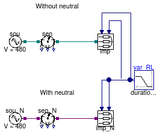
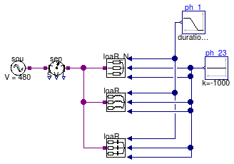

Package with example models
Information
This package contains examples for the use of models that can be found in
Buildings.Electrical.AC.ThreePhasesUnbalanced.Loads.
Extends from Modelica.Icons.ExamplesPackage (Icon for packages containing runnable examples).
Package Content
| Name |
Description |
 Impedances Impedances
|
This model tests three-phase unbalanced impedances with and without neutral cable |
| LoadCtrl
|
|
| Loads
|
This model tests the load models without neutral cable connection |
| Loads_N
|
This model tests unbalanced load models with neutral cable connection |
This model tests three-phase unbalanced impedances with and without neutral cable

Information
This example model shows how to use three-phase unbalanced impedances with and without neutral cable.
This model contains two identical inductive impedances with and without neutral cable.
The impedances have inputs that allow to change the value of their resistances and inductances
externally. The values start to change from their minumum to their maximum values at time
t = 0.25 s.
The unbalanced impedance that has the neutral cable
sen_N.I[4] is able to measure the current in the neutral. that is
the current necessary to satisfy the Kirchoff Current Law (KCL)
such that the algebraic sum of the phase current in each impedance is equal to zero.
Extends from Modelica.Icons.Example (Icon for runnable examples).
Modelica definition
model Impedances
"This model tests three-phase unbalanced impedances with and without neutral cable"
extends Modelica.Icons.Example;
Sources.FixedVoltage_N sou_N(definiteReference=true,
f=60,
V=480)
"Voltage source with neutral cable";
Sensors.GeneralizedSensor_N sen_N
"Power sensor with neutral cable";
Impedance_N imp_N(
plugPhase2=false,
use_R_in=true,
RMin=1,
RMax=10,
use_L_in=true,
LMin=0.1,
LMax=1)
"Impedance with neutral cable";
Sources.FixedVoltage sou(definiteReference=true,
f=60,
V=480)
"Voltage source without neutral cable";
Sensors.GeneralizedSensor sen
"Power sensor without neutral cable";
Impedance imp(
plugPhase2=false,
use_R_in=true,
RMin=1,
RMax=10,
use_L_in=true,
LMin=0.1,
LMax=1)
"Impedance without neutral cable";
Modelica.Blocks.Sources.Ramp var_RL(
duration=0.5,
startTime=0.25,
height=1,
offset=0)
"Power signal for loads on phase 1";
equation
connect(sou.terminal, sen.terminal_n);
connect(sen.terminal_p, imp.terminal);
connect(var_RL.y, imp.y_R);
connect(var_RL.y, imp.y_L);
connect(var_RL.y, imp_N.y_R);
connect(var_RL.y, imp_N.y_L);
connect(sou_N.terminal, sen_N.terminal_n);
connect(sen_N.terminal_p, imp_N.terminal);
end Impedances;

Information
This example model shows how the voltage controller can act on a three-phase unbalanced load.
This model contains two loads: one with voltage control and one without.
The loads produce power only on the first phase that is connected through a transmission line to a voltage
source. When the power production increases, the losses on the line cause an increase of the voltage
at the load. The load with voltage controller detects when the overvoltage happens
and unplugs the load for 2 seconds. After 2 seconds the load is plugged again and if this causes an other
overvoltage it will be unplugged again.
The model contains both a controlled and a not controlled load so the user can
compare the difference in the voltages and powers when the load is unplugged.
Extends from Modelica.Icons.Example (Icon for runnable examples).
Modelica definition
model LoadCtrl
extends Modelica.Icons.Example;
Sources.FixedVoltage_N sou(f=60, V=480)
"Voltage source";
Modelica.Blocks.Sources.Sine pow_1(
freqHz=0.1,
amplitude=4500,
offset=6000)
"Power on phase 1";
Resistive_N load_ctrl(
mode=Buildings.Electrical.Types.Load.VariableZ_P_input,
vThresh=0.05,
tDelay=2,
voltageCtrl=true,
plugPhase2=false,
plugPhase3=false,
P_nominal=0,
V_nominal=480)
"Voltage controlled load";
Lines.Line_N line1(
mode=Buildings.Electrical.Types.CableMode.commercial,
redeclare Buildings.Electrical.Transmission.LowVoltageCables.Cu10
commercialCable,
l=400,
P_nominal=10000,
V_nominal=480)
"Transmission line to voltage controlled load";
Resistive_N load(
mode=Buildings.Electrical.Types.Load.VariableZ_P_input,
plugPhase2=false,
plugPhase3=false,
P_nominal=0,
V_nominal=480)
"Load";
Lines.Line_N line(
mode=Buildings.Electrical.Types.CableMode.commercial,
redeclare Buildings.Electrical.Transmission.LowVoltageCables.Cu10
commercialCable,
l=400,
P_nominal=10000,
V_nominal=480);
equation
connect(pow_1.y, load_ctrl.Pow1);
connect(pow_1.y, load.Pow1);
connect(sou.terminal, line1.terminal_n);
connect(sou.terminal, line.terminal_n);
connect(line.terminal_p, load.terminal);
connect(line1.terminal_p, load_ctrl.terminal);
end LoadCtrl;
This model tests the load models without neutral cable connection

Information
This example model shows how three-phase unbalanced loads can be used.
This model contains two set of loads (one for each type: resistive, inductive and capacitive)
that consume power just on the first phase. The example shows how it's possible to model
this situation in two different ways. It's possible to not connect the loads on the phases
setting the parameters plugLoad*=false.
The alternative is to impose the load on a specific phase equal to zero.
The power measured by the sensors on each phase show that the results are equal.
Note:
Whenever possible it is preferred to disable the load on a specific phase using the parameter plugLoad*
because the equations relative to the load are conditionally removed, reducing the size
of the system of equations.
Extends from Modelica.Icons.Example (Icon for runnable examples).
Modelica definition
model Loads
"This model tests the load models without neutral cable connection"
extends Modelica.Icons.Example;
Sources.FixedVoltage sou(definiteReference=true,
f=60,
V=480)
"Voltage source";
Modelica.Blocks.Sources.Sine ph_1(
amplitude=2000,
freqHz=10,
offset=-2500)
"Power signal for loads on phase 1";
Modelica.Blocks.Sources.Constant ph_23(k=0)
"Power signal for loads on phase 2 and 3";
Resistive loaR(
mode=Buildings.Electrical.Types.Load.VariableZ_P_input,
V_nominal=480,
P_nominal=0)
"Resistive load";
Inductive loaRL(mode=Buildings.Electrical.Types.Load.VariableZ_P_input,
V_nominal=480,
P_nominal=0)
"Inductive load";
Capacitive loaRC(mode=Buildings.Electrical.Types.Load.VariableZ_P_input,
V_nominal=480,
P_nominal=0)
"Capacitive load";
Sensors.GeneralizedSensor sen
"Power sensor";
Sensors.GeneralizedSensor senSingleConn
"Power sensor";
Capacitive loaRC1(
mode=Buildings.Electrical.Types.Load.VariableZ_P_input,
plugPhase2=false,
plugPhase3=false,
V_nominal=480,
P_nominal=0)
"Capacitive load";
Inductive loaRL1(
mode=Buildings.Electrical.Types.Load.VariableZ_P_input,
plugPhase2=false,
plugPhase3=false,
V_nominal=480,
P_nominal=0)
"Inductive load";
Resistive loaR1(
mode=Buildings.Electrical.Types.Load.VariableZ_P_input,
plugPhase2=false,
plugPhase3=false,
V_nominal=480,
P_nominal=0)
"Resistive load";
equation
connect(ph_1.y, loaR.Pow1);
connect(ph_23.y, loaR.Pow3);
connect(ph_23.y, loaR.Pow2);
connect(ph_1.y, loaRL.Pow1);
connect(ph_1.y, loaRC.Pow1);
connect(ph_23.y, loaRL.Pow2);
connect(ph_23.y, loaRL.Pow3);
connect(ph_23.y, loaRC.Pow2);
connect(ph_23.y, loaRC.Pow3);
connect(sou.terminal, sen.terminal_n);
connect(sen.terminal_p, loaR.terminal);
connect(sen.terminal_p, loaRL.terminal);
connect(sen.terminal_p, loaRC.terminal);
connect(senSingleConn.terminal_p, loaR1.terminal);
connect(senSingleConn.terminal_p, loaRL1.terminal);
connect(senSingleConn.terminal_p, loaRC1.terminal);
connect(ph_1.y, loaRC1.Pow1);
connect(ph_1.y, loaRL1.Pow1);
connect(ph_1.y, loaR1.Pow1);
connect(sou.terminal, senSingleConn.terminal_n);
end Loads;
This model tests unbalanced load models with neutral cable connection

Information
This example model shows how three-phase unbalanced loads with the neutral cable can be used.
This model contains three different loads of different type. They start in a balanced configuration
and at time t = 0.25 s the loads on the first phase start to increase their power consumption.
When the loads start to be unbalanced the sensors starts to measure a current in the neutral cable
sen.I[4]. This is the current necessary to satisfy the Kirchoff Current Law (KCL)
such that the algebraic sum of the phase current in each load is equal to zero.

Extends from Modelica.Icons.Example (Icon for runnable examples).
Modelica definition
model Loads_N
"This model tests unbalanced load models with neutral cable connection"
extends Modelica.Icons.Example;
Sources.FixedVoltage_N
sou(definiteReference=true,
f=60,
V=480)
"Voltage source";
Modelica.Blocks.Sources.Ramp ph_1(
offset=-1000,
duration=0.5,
startTime=0.25,
height=-500)
"Power signal for loads on phase 1";
Modelica.Blocks.Sources.Constant ph_23(k=-1000)
"Power signal for loads on phase 2 and 3";
Resistive_N loaR_N(mode=Buildings.Electrical.Types.Load.VariableZ_P_input,
V_nominal=480,
P_nominal=0)
"Resistive load with neutral cable";
Inductive_N loaRL_N(mode=Buildings.Electrical.Types.Load.VariableZ_P_input,
pf=0.9,
V_nominal=480,
P_nominal=0)
"Inductive load with neutral cable";
Capacitive_N loaRC_N(
mode=Buildings.Electrical.Types.Load.VariableZ_P_input,
pf=0.7,
V_nominal=480,
P_nominal=0)
"Capacitive load with neutral cable";
Sensors.GeneralizedSensor_N
sen
"Power sensor with neutral cable";
equation
connect(ph_1.y, loaR_N.Pow1);
connect(ph_23.y, loaR_N.Pow3);
connect(ph_23.y, loaR_N.Pow2);
connect(ph_1.y, loaRL_N.Pow1);
connect(ph_1.y, loaRC_N.Pow1);
connect(ph_23.y, loaRL_N.Pow2);
connect(ph_23.y, loaRL_N.Pow3);
connect(ph_23.y, loaRC_N.Pow2);
connect(ph_23.y, loaRC_N.Pow3);
connect(sou.terminal, sen.terminal_n);
connect(sen.terminal_p, loaR_N.terminal);
connect(sen.terminal_p, loaRL_N.terminal);
connect(sen.terminal_p, loaRC_N.terminal);
end Loads_N;
Automatically generated Mon Jul 13 14:23:11 2015.
 Buildings.Electrical.AC.ThreePhasesUnbalanced.Loads.Examples.Impedances
Buildings.Electrical.AC.ThreePhasesUnbalanced.Loads.Examples.Impedances